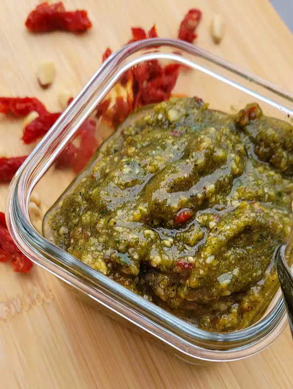

Vegan Pesto

The Best Vegan Pesto
This recipe is completely dairy free. Instead
of the usual cheese we are adding nutritional
yeast for those of you that are lactose sensitive.
Ingredients
- 3 cups fresh basil
- 6 tablespoons pine nuts
- 1/4 cup nutritional yeast
- 4 cloves garlic
- 3 sliced sun dried tomatoes
- 3/4 teaspoon coarse sea salt
- 1/2 teaspoon ground black pepper
- 2 pinches paprika
- 6 tablespoons olive oil
Directions
- Place all ingredients except olive oil into blender
- Blend ingredients til smooth while slowly adding olive oil
- Consistency should be liquefied when done